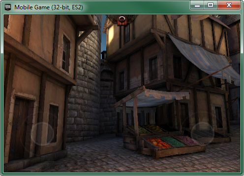
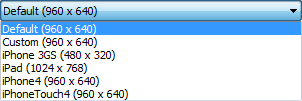

UDN
Search public documentation:
MobilePreviewerCH
English Translation
日本語訳
한국어
Interested in the Unreal Engine?
Visit the Unreal Technology site.
Looking for jobs and company info?
Check out the Epic games site.
Questions about support via UDN?
Contact the UDN Staff
日本語訳
한국어
Interested in the Unreal Engine?
Visit the Unreal Technology site.
Looking for jobs and company info?
Check out the Epic games site.
Questions about support via UDN?
Contact the UDN Staff
移动设备预览器
概述

移动设备预览器通过使用OpenGL ES2渲染器允许您可视化地在PC上查看您的游戏，这种渲染效果和移动设备上的渲染几乎一样。这使您可以获得游戏的接近1：1的预览，不必把游戏部署到设备上进行测试。和图形效果一样，一些其他的功能也可以进行仿真，比如模拟触摸控制。访问移动设备预览器
编辑器中的移动设备预览器
在移动设备预览器上快速加载关卡的最简单的方法是点击编辑器的主工具条上的https://udn.epicgames.com/pub/Three/MobilePreviewerCH/toolbar_pip.png按钮。这将会启动移动设备预览器，以便您可以运行当前加载的地图。编辑器预览器设置
右击https://udn.epicgames.com/pub/Three/MobilePreviewerCH/toolbar_pip.png按钮或点击 https://udn.epicgames.com/pub/Three/MobilePreviewerCH/toolbar_pip_settings.png按钮将会打开移动设备预览器设置窗口。 Commandline(命令行) - 要在移动设备预览器中加载的地图的名称。这必须和已加载的地图的名称相匹配(具有 'UEDPC' 前缀)，并且不应该修改该名称。
Resolution - 从一组预定义选项中选择来设置移动设备预览器窗口的分辨率。
Commandline(命令行) - 要在移动设备预览器中加载的地图的名称。这必须和已加载的地图的名称相匹配(具有 'UEDPC' 前缀)，并且不应该修改该名称。
Resolution - 从一组预定义选项中选择来设置移动设备预览器窗口的分辨率。

| 选项 | 分辨率 | 描述 |
|---|---|---|
| Default(默认) | 960x640 | 设置移动设备预览器的分辨率为960x640，并设置功能为 Default(默认) 。 |
| Custom(自定义) | 可配置的 | 设置移动设备预览器的分辨率为文本域中输入的值，并设置功能为 _Default(默认) 。 |
| iPhone 3GS | 480x320 | 设置移动设备预览器的分辨率为480x320，并设置功能为 _iPhone 3GS _ 。 |
| iPad | 1024x768 | 设置移动设备预览器的分辨率为1024x768，并设置功能为 iPad 。 |
| iPhone4 | 960x640 | 设置移动设备预览器的分辨率为 960x640，并设置功能为 iPhone4 。 |
| iPhoneTouch4 | 960x640 | 设置移动设备预览器的分辨率为 960x640，并设置功能为 iPhoneTouch4 。 |
宽x高 还是 高x宽 。
| 选项 | 描述 |
|---|---|
| Landscape(景观) | 分辨率解释为 宽x高 。 |
| Portrait(画像) | 分辨率解释为 高x宽 。 |

单机游戏中的移动设备预览器
在启动游戏时使用 '-simmobile' 命令行开关将会激活ES2渲染器和其它的移动设备相关的功能，比如基于触摸的输入仿真。 如果您仅想启用ES2渲染器，不需要其他功能，那么您可以传入 '-es2' 命令行参数来激活OpenGL ES2而不是一般的基于DirectX的渲染。这使用的代码路径和移动设备游戏在设备上运行时所使用的代码路径几乎一样，所以图形效果非常相似。预览器和设备之间的差别
预览器和编辑器之间的差别
- 当想在不必运行移动设备上运行游戏的情况下更精确地查看游戏的效果时，那么您应该使用移动设备预览器。编辑器使用的是Direct3D而不是移动设备使用的OpenGL ES2。所以，它不能显示某些阴影效果，比如需要使用OpenGL 着色器的雾和移动设备高光。
- 移动设备预览器还不支持调试视图模式，比如着色器复杂度、线框、不带光照模式、带光照模式、纯光照模式、光照细节模式等。如果您想使用这些功能，您想必须通过使用"Play in Editor(在编辑器中播放)" 或 "Play on PC(在PC上播放)"来运行您的游戏。注意，着色器复杂度可能不精确，因为移动设备预览器使用的着色器和编辑器不一样。